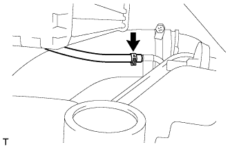
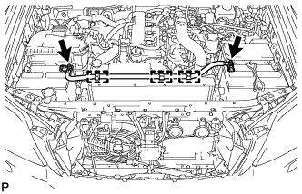
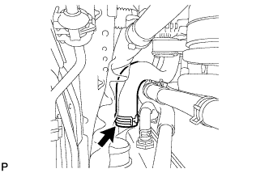
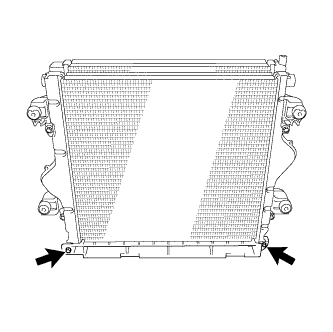
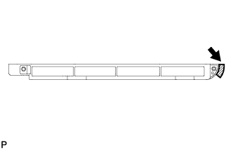
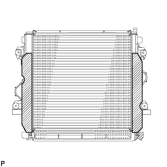
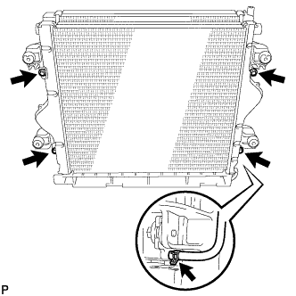
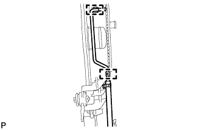

РАДИАТОР (для моделей с DPF) > СНЯТИЕ |
| 1. ОТСОЕДИНИТЕ ПРОВОД ОТ ОТРИЦАТЕЛЬНОГО ВЫВОДА АККУМУЛЯТОРНОЙ БАТАРЕИ |
| 2. СНИМИТЕ ВЕРХНЕЕ УПЛОТНЕНИЕ КРОНШТЕЙНА РАДИАТОРА |
Освободите 13 фиксаторов и снимите верхнее уплотнение кронштейна радиатора.
| 3. СНИМИТЕ НИЖНЮЮ ОБЛИЦОВКУ ПЕРЕДНЕГО БАМПЕРА |
Освободите фиксатор, выверните 5 болтов и снимите нижнюю накладку переднего бампера.
| 4. СНИМИТЕ ЗАЩИТУ КАРТЕРА ДВИГАТЕЛЯ № 1 В СБОРЕ |
Выверните 4 болта и снимите защиту картера двигателя № 1.
| 5. СЛЕЙТЕ ОХЛАЖДАЮЩУЮ ЖИДКОСТЬ ДВИГАТЕЛЯ |
Ослабьте пробку сливного крана радиатора.
 |
Слейте охлаждающую жидкость, сняв пробку расширительного бачка, а затем с помощью ключа снимите вентиляционную пробку.
Ослабьте пробку сливного крана блока цилиндров.

| *1 | Бачок радиатора | *2 | Вентиляционная пробка |
| *3 | Пробка сливного крана радиатора | *4 | Пробка сливного крана блока цилиндров |
| 6. СНИМИТЕ НАКЛАДКУ ПЕРЕДНЕГО БАМПЕРА |
| 7. СНИМИТЕ ВЕРХНИЙ ДЕРЖАТЕЛЬ ПЕРЕДНЕГО БАМПЕРА |
 |
Выверните 3 болта и снимите держатель.
| 8. СНИМИТЕ ПРАВЫЙ БОКОВОЙ ОТРАЖАТЕЛЬ РАДИАТОРА |
 |
Используя съемник фиксаторов, открепите 3 захвата и снимите фиксатор. Затем сдвиньте боковой отражатель так, чтобы можно было снять радиатор.
| 9. СНИМИТЕ ЛЕВЫЙ БОКОВОЙ ОТРАЖАТЕЛЬ РАДИАТОРА |
 |
Используя съемник фиксаторов, открепите 3 захвата и снимите фиксатор. Затем сдвиньте боковой отражатель так, чтобы можно было снять радиатор.
| 10. СНИМИТЕ ВОЗДУШНЫЙ ШЛАНГ № 1 |
 |
Ослабьте 2 зажима.
Отсоедините воздушный шланг № 1 от впускного патрубка и промежуточного охладителя.
| 11. СНИМИТЕ ВОЗДУШНЫЙ ШЛАНГ ПРОМЕЖУТОЧНОГО ОХЛАДИТЕЛЯ |
|  |
Отсоедините вакуумный шланг № 2 от промежуточного охладителя.
 |
Ослабьте 2 зажима.
Отсоедините воздушный шланг промежуточного охладителя от впускного патрубка и промежуточного охладителя.
| 12. СНИМИТЕ ПАТРУБОК РАДИАТОРА № 1 |
 |
| 13. СНИМИТЕ ЖГУТ ЭЛЕКТРОПРОВОДКИ ДВИГАТЕЛЯ № 3 (для автомобилей, предназначенных для эксплуатации в холодном климате) |
|  |
Отверните 2 гайки с вывода аккумуляторной батареи.
Отсоедините 3 зажима жгута проводов.
Снимите жгут электропроводки двигателя № 3 с кожуха вентилятора.
| 14. СНИМИТЕ КОЖУХ ВЕНТИЛЯТОРА |
 |
Отсоедините перепускной шланг охлаждающей жидкости № 1, отсоедините 2 зажима от кожуха вентилятора.
Отсоедините перепускной шланг охлаждающей жидкости № 2 от расширительного бачка радиатора.
Выверните 3 болта и снимите расширительный бачок радиатора.
Для моделей с автоматической трансмиссией:
 |
Отсоедините впускной и выпускной патрубки масляного радиатора и открепите зажим от кожуха вентилятора.
Отсоедините от радиатора 2 патрубка масляного радиатора.
 |
Ослабьте 4 гайки, крепящие вентилятор с вискомуфтой.
Снимите поликлиновой ремень вентилятора и генератора (Нажмите здесь).
 |
Выверните 2 болта, крепящие кожух вентилятора.
Отверните 4 гайки вентилятора с вискомуфтой, а затем снимите кожух вместе с вентилятором с вискомуфтой.
Отсоедините перепускной шланг охлаждающей жидкости № 2 от зажима шланга на кожухе вентилятора.
 |
Отсоедините перепускной шланг охлаждающей жидкости № 2 от впускного патрубка охлаждающей жидкости.
Снимите шкив вентилятора с насоса системы охлаждения.
| 15. ОТСОЕДИНИТЕ ШЛАНГ РАДИАТОРА № 2 |
|  |
| 16. СНИМИТЕ РАДИАТОР В СБОРЕ С ПРОМЕЖУТОЧНЫМ ОХЛАДИТЕЛЕМ В СБОРЕ |
 |
Выверните 4 болта и снимите радиатор с промежуточным охладителем.
| 17. СНИМИТЕ ВОЗДУШНУЮ НАПРАВЛЯЮЩУЮ РАДИАТОРА № 1 |
|  |
Выверните 2 болта и снимите воздушную направляющую радиатора.
|  |
Снимите с воздушной направляющей радиатора уплотнение между кронштейном и радиатором № 3.
| 18. СНИМИТЕ УПЛОТНЕНИЕ МЕЖДУ КРОНШТЕЙНОМ И РАДИАТОРОМ № 2 |
|  |
Снимите 2 уплотнения между кронштейном и радиатором № 2 с промежуточного охладителя.
| 19. СНИМИТЕ ПРОМЕЖУТОЧНЫЙ ОХЛАДИТЕЛЬ В СБОРЕ |
|  |
Отсоедините вакуумный шланг от промежуточного охладителя.
Выверните 4 болта и снимите промежуточный охладитель с радиатора.
| 20. СНИМИТЕ ВОЗВРАТНЫЙ МАСЛОПРОВОД |
|  |
Освободите 2 зажима и снимите возвратный маслопровод с радиатора.
| 21. СНИМИТЕ КРОНШТЕЙН РАДИАТОРА № 1 |
Снимите 2 кронштейна радиатора.
| 22. СНИМИТЕ КРОНШТЕЙН РАДИАТОРА № 2 |
Снимите 2 кронштейна радиатора.
| 23. СНИМИТЕ ВТУЛКУ ОПОРЫ РАДИАТОРА № 1 |
Снимите 4 втулки опор радиатора.